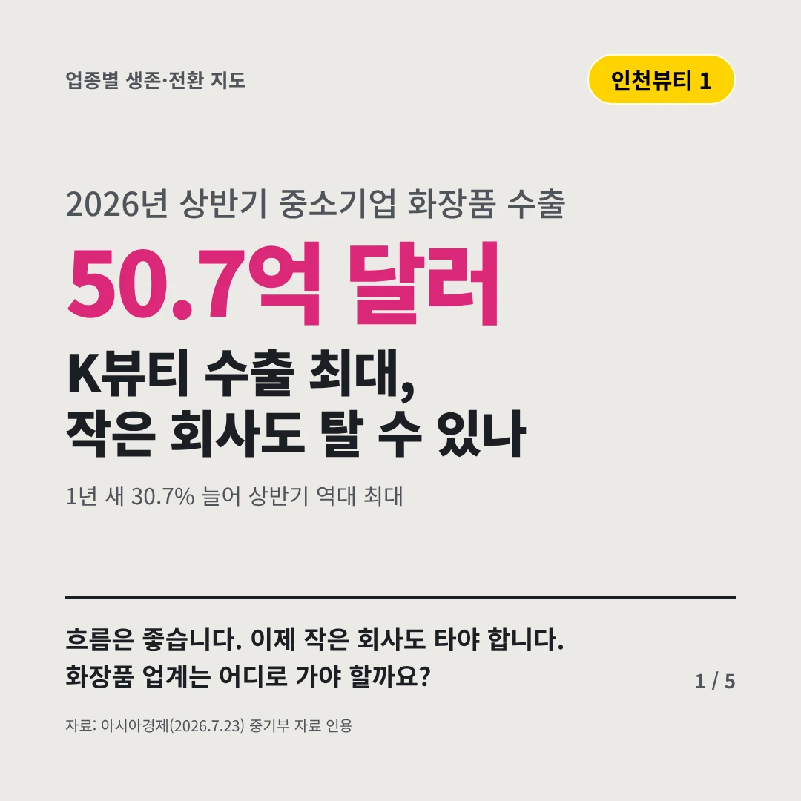
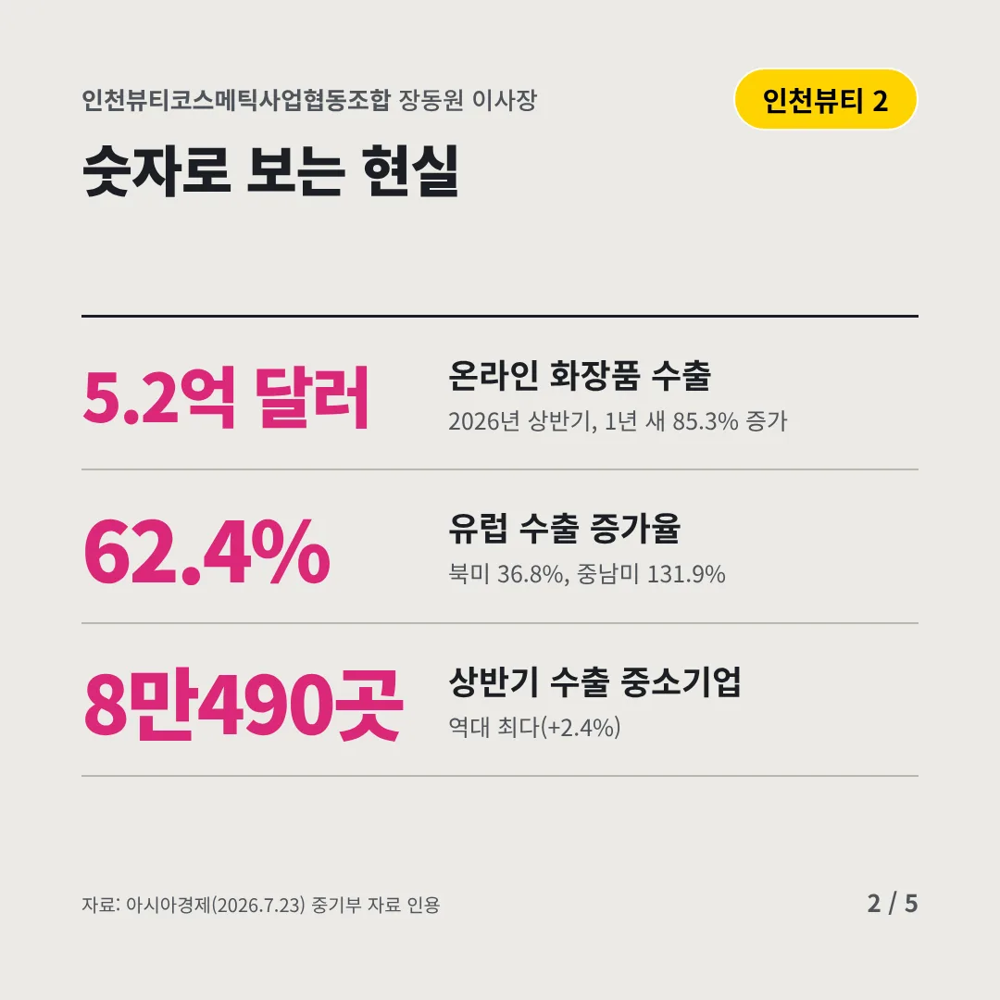
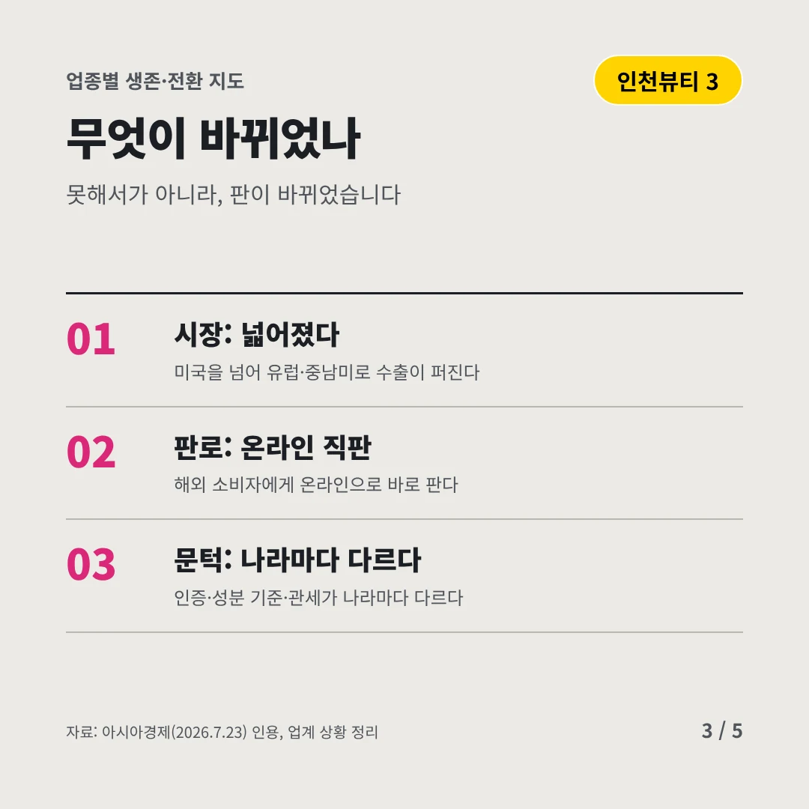
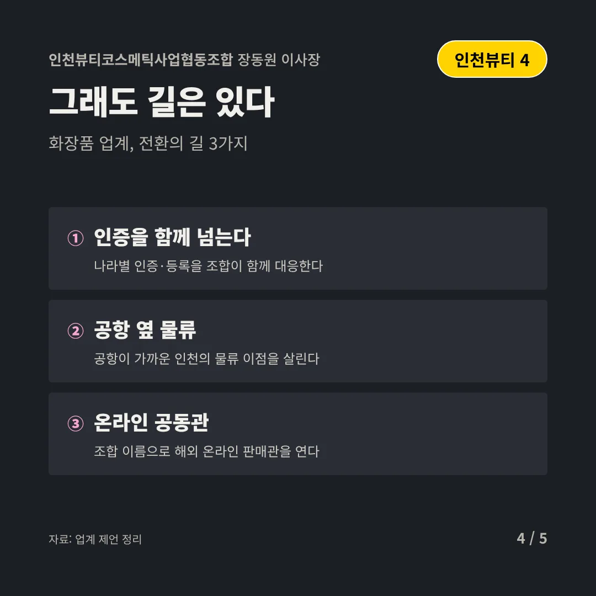
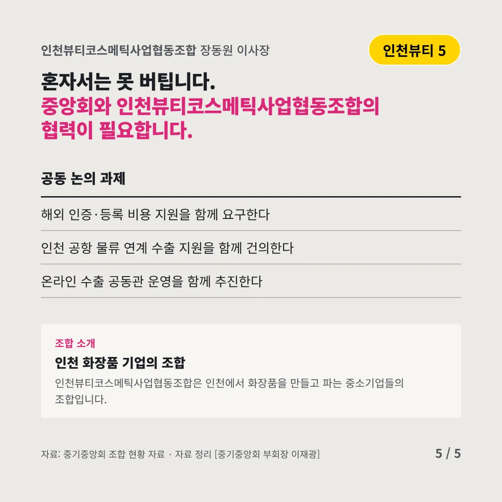
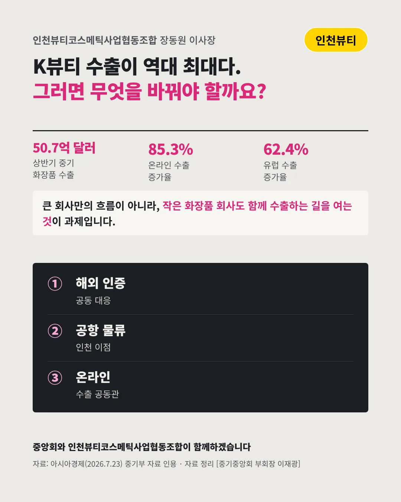

인천뷰티코스메틱사업협동조합
K뷰티 수출 최대, 작은 회사도 탈 수 있나
50.7억 달러 2026년 상반기 중소기업 화장품 수출






흐름은 좋습니다. 이제 작은 회사도 타야 합니다. 화장품 업계는 어디로 가야 할까요?
숫자로 보는 현실
- 5.2억 달러온라인 화장품 수출2026년 상반기, 1년 새 85.3% 증가
- 62.4%유럽 수출 증가율북미 36.8%, 중남미 131.9%
- 8만490곳상반기 수출 중소기업역대 최다(+2.4%)
무엇이 바뀌었나
- 시장: 넓어졌다미국을 넘어 유럽·중남미로 수출이 퍼진다
- 판로: 온라인 직판해외 소비자에게 온라인으로 바로 판다
- 문턱: 나라마다 다르다인증·성분 기준·관세가 나라마다 다르다
그래도 길은 있다
- 인증을 함께 넘는다나라별 인증·등록을 조합이 함께 대응한다
- 공항 옆 물류공항이 가까운 인천의 물류 이점을 살린다
- 온라인 공동관조합 이름으로 해외 온라인 판매관을 연다
한 장 요약

조합 소개
인천뷰티코스메틱사업협동조합은 인천에서 화장품을 만들고 파는 중소기업들의 조합입니다.
자료: 아시아경제(2026.7.23)